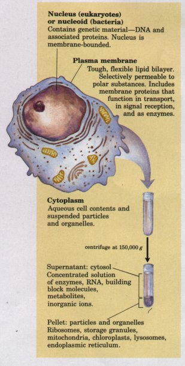
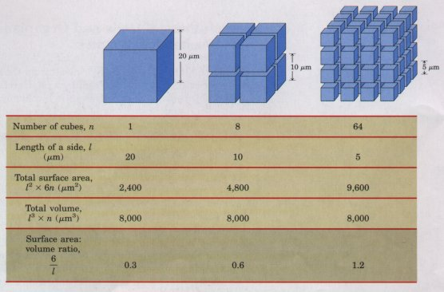
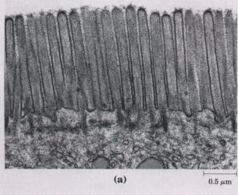
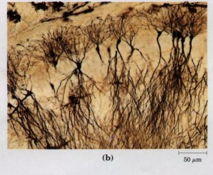
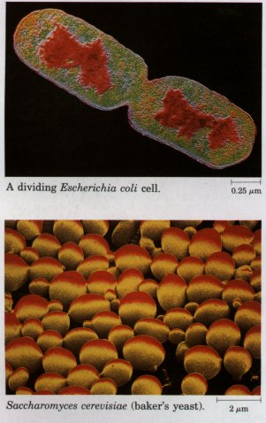
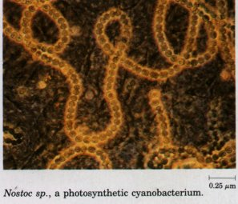
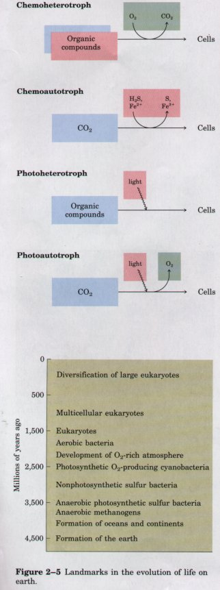

| Cells are the structural and functional
units of all living organisms. The smallest organisms
consist of single cells and are microscopic, whereas
larger organisms are multicellular. The human body, for
example, contains at least 1014 cells. Unicellular
organisms are found in great variety throughout virtually
every environment from Antarctica to hot springs to the
inner recesses of larger organisms. Multicellular
organisms contain many different types of cells, which
vary in size, shape, and specialized function. Yet no
matter how large and complex the organism, each of its
cells retains some individuality and independence. Despite their many differences, cells of all kinds share certain structural features (Fig. 2-1). The plasma membrane defines the periphery of the cell, separating its contents from the surroundings. It is composed of enormous numbers of lipids and protein molecules, held together primarily by noncovalent hydrophobic interactions (p. 18), forming a thin, tough, pliable, hydrophobic bilayer around the cell. The membrane is a barrier to the free passage of inorganic ions and most other charged or polar compounds; transport proteins in the plasma membrane allow the passage of certain ions and molecules. Other membrane proteins are receptors that transmit signals from the outside to the inside of the cell, or are enzymes that participate in membrane-associated reaction pathways. |
 Figure 2-1 The universal features of all living cells: a nucleus or nucleoid, a plasma membrane, and cytoplasm. The cytosol is that portion of the cytoplasm that remains in the supernatant after centrifugation of a cell extract of 150,000 g for 1 h. |
Because the individual lipid and protein subunits of the plasma membrane are not covalently linked, the entire structure is remarkably flexible, allowing changes in the shape and size of the cell. As a cell grows, newly made lipid and protein molecules are inserted into its plasma membrane; cell division produces two cells, each with its own membrane. Growth and fission occur without loss of membrane integrity. In a reversal of the fission process, two separate membrane surfaces can fuse, also without loss of integrity. Membrane fusion and fission are central to mechanisms of transport known as endocytosis and exocytosis.
The internal volume bounded by the plasma membrane, the cytoplasm, is composed of an aqueous solution, the cytosol, and a variety of insoluble, suspended particles (Fig. 2-1). The cytosol is not simply a dilute aqueous solution; it has a complex composition and gel-like consistency. Dissolved in the cytosol are many enzymes and the RNA molecules that encode them; the monomeric subunits (amino acids and nucleotides) from which these macromolecules are assembled; hundreds of small organic molecules called metabolites, intermediates in biosynthetic and degradative pathways; coenzymes, compounds ofintermediate molecular weight (Mr 200 to 1,000) that are essential participants in many enzyme-catalyzed reactions; and inorganic ions
Among the particles suspended in the cytosol are supramolecular complexes and, in higher organisms but not in bacteria, a variety of membrane-bounded organelles in which specialized metabolic machinery is localized. Ribosomes, complexes of over 50 different protein and RNA molecules, are small particles, 18 to 22 nm in diameter. Ribosomes are the enzymatic machines on which protein synthesis occurs; they often occur in clusters called polysomes (polyribosomes) held together by a strand of messenger RNA. Also present in the cytoplasm of many cells are granules containing stored nutrients such as starch and fat. Nearly all living cells have either a nucleus or a nucleoid, in which the genome (the complete set of genes, composed of DNA) is stored and replicated. The DNA molecules are always very much longer than the cells themselves, and are tightly folded and packed within the nucleus or nucleoid as supramolecular complexes of DNA with specific proteins. The bacterial nucleoid is not separated from the cytoplasm by a membrane, but in higher organisms, the nuclear material is enclosed within a double membrane, the nuclear envelope. Cells with nuclear envelopes are called eukaryotes (Greek eu, "true," and karyon, "nucleus"); those without nuclear envelopes-bacterial cellsare prokaryotes (Greek pro, "before"). Unlike bacteria, eukaryotes have a variety of other membrane-bounded organelles in their cytoplasm, including mitochondria, lysosomes, endoplasmic reticulum, Golgi complexes, and, in photosynthetic cells, chloroplasts.
In this chapter we review briefly the evolutionary relationships among some commonly studied cells and organisms, and the structural features that distinguish cells of various types. Our main focus is on eukaryotic cells. Also discussed in brief are the cellular parasites known as viruses.
Most cells are of microscopic size. Animal and plant cells are typically 10 to 30 μm in diameter, and many bacteria are only 1 to 2 μm long.
What limits the dimensions of a cell? The lower limit is probably set by the minimum number of each of the different biomolecules required by the cell. The smallest complete cells, certain bacteria known collectively as mycoplasma, are 300 nm in diameter and have a volume of about 10-14 mL. A single ribosome is about 20 nm in its longest dimension, so a few ribosomes take up a substantial fraction of the cell's volume. In a cell of this size, a 1 μM solution of a compound represents only 6,000 molecules.
| Figure 2-2 Smaller cells have larger ratios of surface area to volume, and their interiors are therefore more accessible to substances diffusing into the cell through the surface. When the large cube (representing a large cell) is subdivided into many smaller cubes (cells), the total surface area increases greatly without a change in the total volume, and the surface-to-volume ratio increases accordingly. |  |
The upper limit of cell size is set by the rate of difl'usion of solute molecules in aqueous systems. The availability of fuels and essential nutrients from the surrounding medium is sometimes limited by the rate of their diffusion to all regions of the cell. A bacterial cell that depends upon oxygen-consuming reactions for energy production (an aerobic cell) must obtain molecular oxygen (O2) from the surrounding medium by diffusion through its plasma membrane. The cell is so small, and the ratio of its surface area to its volume is so large, that every part of its cytoplasm is easily reached by O2 diffusing into the cell. As the size of a cell increases, its surface-to-volume ratio decreases (Fig. 2-2), until metabolism consumes O2 faster than diffusion can supply it. Aerobic metabolism thus becomes impossible as cell size increases beyond a certain point, placing a theoretical upper limit on the size of the aerobic cell.
There are interesting exceptions to this generalization that cells must be small. The giant alga Nitella has cells several centimeters long. To assure the delivery of nutrients, metabolites, and genetic information (RNA) to all of its parts, each cell is vigorously "stirred" by active cytoplasmic streaming (p. 43). The shape of a cell can also help to compensate for its large size. A smooth sphere has the smallest surface-to-volume ratio possible for a given volume. Many large cells, although roughly spherical, have highly convoluted surfaces (Fig. 2-3a), creating larger surface areas for the same volume and thus facilitating the uptake of fuels and nutrients and release of waste products to the surrounding medium. Other large cells (neurons, for example) have large surface-to-volume ratios because they are long and thin, star-shaped, or highly branched (Fig. 2-3b), rather than spherical.


Figure 2-3 Convolutions of the plasma membrane, or long, thin extensions of the cytoplasm, increase the surface-to-volume ratio of cells. (a) Cells of the intestinal mucosa (the inner lining of the small intestine) are covered with microvilli, increasing the area for absorption of nutrients from the intestine. (b) Neurons of the hippocampus of the rat brain are several millimeters long, but the long extensions (axons) are only about 10 nm wide.
| Because all living cells have evolved from the same progenitors, they share certain fundamental similarities. Careful biochemical study of just a few cells, however different in biochemical details and varied in superficial appearance, ought to yield general principles applicable to all cells and organisms. The burgeoning knowledge in biology in the past 150 years has supported these propositions over and over again. Certain cells, tissues, and organisms have proved more amenable to experimental studies than others. Knowledge in biochemistry, and much of the information in this book, continues to be derived from a few representative tissues and organisms, such as the bacterium Escherichia coli, the yeast Saccharomyces, photosynthetic algae, spinach leaves, the rat liver, and the skeletal muscle of several different vertebrates. |  |
In the isolation of enzymes and other cellular components, it is ideal if the experimenter can begin with a plentiful and homogeneous source of the material. The component of interest (such as an enzyme or nucleic acid) often represents only a miniscule fraction of the total material, and many grams of starting material are needed to obtain a few micrograms of the purified component. Certain types of physical and chemical studies of biomolecules are precluded if only microgram quantities of the pure substance are available. A homogeneous source of an enzyme or nucleic acid, in which all of the cells are genetically and biochemically identical, leaves no doubt about which cell type yielded the purified component, and makes it safer to extrapolate the results of in vitro studies to the situation in vivo. A large culture of bacterial or protistan cells (E. coli, Saccharomyces, or Chlamydomonas, for example), all derived by division from the same parent and therefore genetically identical, meets the requirement for a plentiful and homogeneous source. Individual tissues from laboratory animals (rat liver, pig brain, rabbit muscle) are plentiful sources of similar, though not identical; cells. Some animal and plant cells proliferate in cell culture, producing populations of identical (cloned) cells in quantities suitable for biochemical analysis.
Genetic mutants, in which a defect in a single gene produces a specific functional defect in the cell or organism, are extremely useful in establishing that a certain cellular component is essential to a particular cellular function. Because it is technically much simpler to produce and detect mutants in bacteria and yeast, these organisms (E. coli and Saccharomyces cerevisiae, for example) have been favorite experimental targets for biochemical geneticists.
An organism that is easy to culture in the laboratory, with a short generation time, offers significant advantages to the research biochemist. An organism that requires only a few simple precursor molecules in its growth medium can be cultured in the presence of a radioisotopically labeled precursor, and the metabolic fate of that precursor can then be conveniently traced by following the incorporation of the radioactive atoms into its metabolic products. The short generation time (minutes or hours) of microorganisms allows the investigator to follow a labeled precursor or a genetic defect through many generations in a few days. In higher organisms with generation times of months or years, this is virtually impossible.
Some highly specialized tissues of multicellular organisms are remarkably enriched in some particular component related to their specialized function. Vertebrate skeletal muscle is a rich source of actin and myosin; pancreatic secretory cells contain high concentrations of rough endoplasmic reticulum; sperm cells are rich in DNA and in flagellar proteins; liver (the major biosynthetic organ of vertebrates) contains high concentrations of many enzymes of biosynthetic pathways; spinach leaves contain large numbers of chloroplasts; and so on. For studies on such specific components or processes, biochemists commonly choose a specialized tissue for their experimental systems.
Sometimes simplicity of structure or function makes a particular cell or organism attractive as an experimental system. For studies of plasma membrane structure and function, the mature erythrocyte (red blood cell) has been a favorite; it has no internal membranes to complicate purification of the plasma membrane. Some bacterial viruses (bacteriophages) have few genes. Their DNA molecules are therefore smaller and much simpler than those of humans or corn plants, and it has proved easier to study replication in these viruses than in human or corn chromosomes.
The biochemical description of living cells in this book is a composite, based on studies of many types of cells. The biochemist must always exercise caution in generalizing from results obtained in studies of selected cells, tissues, and organisms, and in relating what is observed in vitro to what happens within the living cell.

All of the organisms alive today are believed to have evolved from ancient, unicellular progenitors. Tvvo large groups of extant prokaryotes evolved from these early forms: archaebacteria (Greek, arche, "origin") and eubacteria. Eubacteria inhabit the soil, surface waters, and the tissues of other living or decaying organisms. Most common and well-studied bacteria, including E. coli and the cyanobacteria (formerly called blue-green algae), are eubacteria. The archaebacteria are more recently discovered and less well studied. They inhabit more extreme environments-salt brines, hot acid springs, bogs, and the deep regions of the ocean.Within each of these two large groups of bacteria are subgroups distinguished by the habitats to which they are best adapted. In some habitats there is a plentiful supply of oxygen, and the resident organisms live by aerobic metabolism; their catabolic processes ultimately result in the transfer of electrons from fuel molecules to oxygen. Other environments are virtually devoid of oxygen, forcing resident organisms to conduct their catabolic business without it. Many of the organisms that have evolved in these anaerobic environments are obligate anaerobes; they die when exposed to oxygen.
| All organisms, including bacteria, can
be classified as either chemotrophs
(those obtaining their energy from a chemical fuel) or phototrophs
(those using sunlight as their primary energy source).
Certain organisms can synthesize some or all of their
monomeric subunits, metabolic intermediates, and
macromolecules from very simple starting materials such
as CO2 and NH3; these are the autotrophs.
Others must acquire some of their nutrients from the
environment preformed (by autotrophic organisms, for
example); these are heterotrophs. There
are therefore four general modes of obtaining fuel and
energy, and four general groups of organisms
distinguished by these modes: chemoheterotrophs,
chemoautotrophs, photoheterotrophs, and photoautotrophs
(Fig. 2-4). As shown in Figure 2-5, the earliest cells probably arose about 3.5 billion (3.5 x 109) years ago in the rich mixture of organic compounds, the "primordial soup," of prebiotic times; they were almost certainly chemoheterotrophs. The organic compounds were originally synthesized from such components of the early earth's atmosphere as CO, CO2, N2, and CH4 by the nonbiological actions of volcanic heat and lightning (Chapter 3). Primitive heterotrophs gradually acquired the capability to derive energy from certain compounds in their environment and to use that energy to synthesize more and more of their own precursor molecules, thereby becoming less dependent on outside sources of these molecules-less extremely heterotrophic. A very significant evolutionary event was the development of pigments capable of capturing visible light from the sun and using the energy to reduce or "fix" CO2 into more complex organic compounds. The original electron (hydrogen) donor for these photosynthetic organisms was probably H2S, yielding elemental sulfur as the byproduct, but at some point cells developed the enzymatic capacity to use H2O as the electron donor in photosynthetic reactions, producing O2. The cyanobacteria are the modern descendants of these early photosynthetic O2 producers. |
Figure 2-4 Organisms can be classified according to their source of energy (shaded red) and the form in which they obtain carbon atoms (shaded blue) for the synthesis of cellular material. Organic compounds are both energy source and carbon source for chemoheterotrophs such as ourselves. Some, but not all, chemoheterotrophs consume O2 and produce CO2, and some photoautotrophs produce O2 (shaded green).  Figure 2-5 Landmarks in the evolution of life on earth. |
The atmosphere of the earth in the earliest stages of biological evolution was nearly devoid of O2, and the earliest cells were therefore anaerobic. With the rise of O2-producing photosynthetic cells, the earth's atmosphere became progressively richer in O2, allowing the evolution of aerobic organisms, which obtained energy by passing electrons from fuel molecules to O2 (that is, by oxidizing organic compounds). Because electron transfers involving O2 yield energy (they are very exergonic; see Chapter 1), aerobic organisms enjoyed an energetic advantage over their anaerobic counterparts when both competed in an environment containing O2. This advantage translated into the predominance of aerobic organisms in O2-rich environments.
Modern bacteria inhabit almost every ecological niche in the biosphere, and there are bacterial species capable of using virtually every type of organic compound as a source of carbon and energy. Perhaps three-fourths of all the living matter on the earth consists of microscopic organisms, most of them bacteria.
Bacteria play an important role in the biological exchanges of matter and energy. Photosynthetic bacteria in both fresh and marine waters trap solar energy and use it to generate carbohydrates and other cell materials, which are in turn used as food by other forms of life. Some bacteria can capture molecular nitrogen (N2) from the atmosphere and use it to form biologically useful nitrogenous compounds, a process known as nitrogen fixation. Because animals and most plants cannot do this, bacteria form the starting point of many food chains in the biosphere. They also participate as ultimate consumers, degrading the organic structures of dead plants and animals and recycling the end products to the environment.